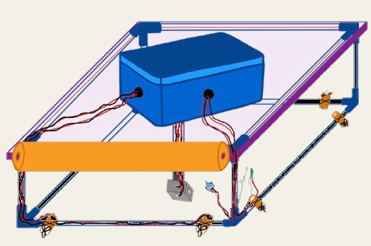
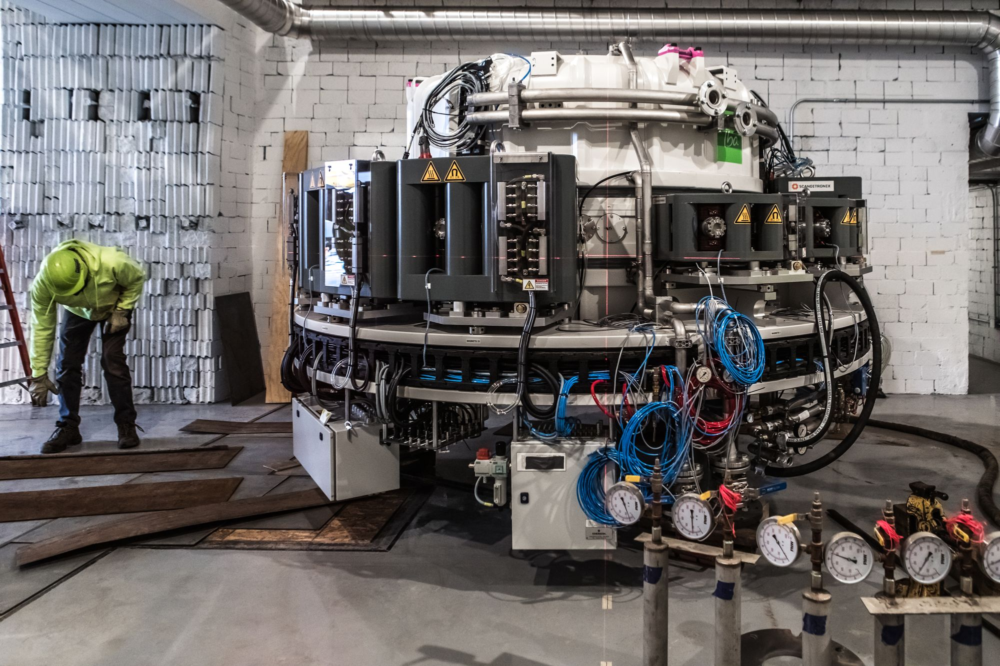

Making
Things built, tested, and designed for people.



- A mine shaft winch2025
A collapsible winch that lowers a sensor payload more than 600 feet into a mine shaft, with gas sensors and live video, on a $400 budget.
- Alumni and studentsHuman-centred design, with Pomona College
Designing better ways for alumni and students across the Claremont Colleges to meet.
- People and animalsHuman-centred design, with The Salvation Army
Asking how time with animals might support trust and purpose for people recovering from homelessness and addiction, in Orange County.